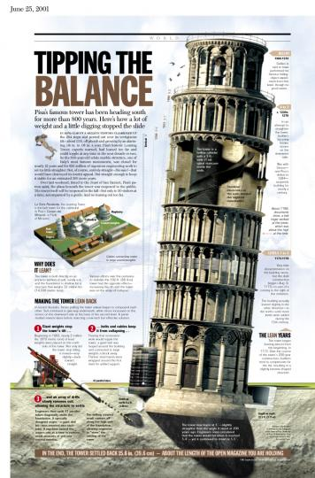

Graphics at Time
Gibbs wanted specifically to take advantage of Time’s graphics director, Jackson Dykman. Then-Managing Editor James Kelly had hired Dykman away from a similar position at the Washington Post in 2001, and since then Time’s graphics had occupied an increasingly central role in the magazine. Kelly recalls that after Dykman’s arrival, Time printed a freestanding, two-page graphic spread almost every week. “They’re very popular with readers,” says Kelly.[2] Dykman had produced such spreads about straightening the Leaning Tower of Pisa, selecting a new pope, and pulling a sunken Navy warship out of the Atlantic. Their role in the magazine was to present a great deal of information in an appealing, accessible way.
Such self-contained projects were only one component of Dykman’s job, however. He was also responsible for producing charts and maps that were embedded into written stories in order to amplify them or strengthen a point. Larger graphics of perhaps several pages often accompanied Time’s coverage of broad topics.
Dykman’s position was therefore unique in Time’s hierarchy. The magazine was divided into sections according to subject—such as Nation, World, Business, and Science. A section editor managed a staff of reporters in each. Dykman, however, contributed to every section, and did not report to any one section editor. Though these editors frequently requested his input, Dykman had a great deal of autonomy in choosing the projects he wished to undertake. His only direct superiors were the art director and the managing editor, both of whom also gave him wide latitude.
Dykman—a reporter, writer, and artist in his own right—managed his own team of two reporters and three artists. Graphics reporters, he notes, concentrated on statistical and visual data, rather than quotes and narratives. They required facility with numbers and their meaning. “To achieve a visualization,” Dykman says, “you have to ask a completely different set of questions” from those required to achieve a narrative story.[3] Dykman’s three artists used the data reporters uncovered to design graphics. Dykman coordinated these efforts, in addition to contributing his own reporting and art. The graphics department’s goal, as Dykman describes it, was “to tell stories in interesting and different ways that aren’t solid pages of text.”
To do so, Dykman had to identify what data could be paired with Time’s written content in a compelling visual display. His job required him to stay on top of all the stories Time planned to publish, so that he could suggest which reports, polls or research could enhance those stories. “I read endless reports and studies,” he says. Time held daily editorial meetings at 10 a.m. for the magazine’s writers and editors to offer ideas and discuss the progress of the week’s issue. Dykman’s role at these meetings was to propose—based on his wide reading—maps, charts or other graphics to complement Time’s narrative content.
Fortunately, Dykman had abilities and a personality to match these duties. He had a nearly photographic memory; he recalls the irritation of one editor at the Washington Post when she noticed that Dykman was not taking notes during a training session. She soon realized, however, that Dykman did not need to take notes. He was also a contrarian, drawn to examining societal “truths” in order to correct mistaken hypotheses or faulty data. He drew ideas from a wide variety of sources: sometimes a report published the previous week, sometimes trivia he had learned several years before. “I just remember,” he says.
Footnotes
[2] Author’s interview with James Kelly, on April 12, 2007, in New York City. All further quotes from Kelly, unless otherwise attributed, are from this interview.
[3] Author’s interview with Jackson Dykman, on April 5, 2007, in New York City. All further quotes from Dykman, unless otherwise attributed, are from this interview.